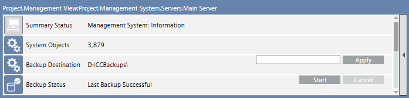

General Tasks
This section provides step-by-step instructions for some common tasks in Desigo CC with the Lite DMS User Interface.
Start an Installed Client
Do this procedure to start Desigo CC on a computer where the Desigo CC software is installed as a normal Windows application.
- Start Desigo CC from the Windows Start button or by clicking the icon on the desktop.
- The logon dialog box displays. You can log on to the system as a Desigo CC user or Windows user.
- Enter your username and password.
- Select the domain.
- Click Logon.
End your Work Session
You want to quit the Desigo CC application.
- In the Summary bar, select Menu > Exit.
- You are logged off and Desigo CC shuts down.
Change Your Password
Read the instructions of the topic that most closely relates to the task you need to carry out.

It is recommended to choose a strong password.
When you enter a new password and confirm it, in those fields:
- Characters appear in black, if the password is compliant with the password policy.
- Characters appear in red, if the password does not comply instead.
For more details about password complexity rules, see your System Administrator.
In hierarchical distributed systems, password change is only possible on master system for Global Desigo CC User.
Change Default Password Upon Your First Login
- Upon your first login, you are forced to change the default password, and the password change dialog box appears.
- Complete all required fields—Old Password, New Password, Confirm Password—and then click Change Password.
- A message informs you that your password has been successfully changed.
- Click OK.
- The login to Desigo CC is carried out.
Change Your Password when it is About to Expire
- Upon login, a message tells you that your password is about to expire.
- Click Yes.
NOTE: If you click No, the login to Desigo CC is carried out.
The password change will be prompted again at the next login attempt. - In the password change dialog box, complete all required fields—Old Password, New Password, Confirm Password—and then click Change Password.
- A message informs you that your password has been successfully changed.
- Click OK.
- The login to Desigo CC is carried out.
Change Your Expired Password
- Upon login, you are forced to change your expired password, and the password change dialog box appears.
- Complete all required fields—Old Password, New Password, Confirm Password—and then click Change Password.
- A message informs you that your password has been successfully changed.
- Click OK.
- The login to Desigo CC is carried out.
Change Your Password After Login
- You are logged on into Desigo CC.
- For security reasons or reset, you want to change your user password.
- In the Summary bar, select Menu > Operator > Change User Password.
- The password change dialog box appears.
- Complete all required fields—Old Password, New Password, Confirm Password—and then click Change Password.
- A message informs you that your password has been successfully changed.
- Click OK to close the message box.
Do an Operator Switchover
- The currently logged-on operator is at the workstation and you need to take over urgently.
NOTE: If the currently logged-on operator is not at the workstation, see Do an operator log off.
- In the Summary bar, select Menu > Operator > Switchover.
NOTE: You can carry out this task only if the option to do the operator switchover is available in the system menu. - The logon dialog box displays.
- In Current user, have the currently logged on operator to enter the password.
- In New User, enter your username, password, and domain.
- Click Logon.
- The current user is logged off from Desigo CC. The system splash screen displays, then Desigo CC restarts with your user credentials.
Switch Between Active Windows
- You have multiple active windows (for example, System Manager and Event List), and you want to bring a different one to the foreground on the system screen.
- In the Summary bar, select Menu > Active Tasks.
- From the thumbnail preview of the active windows, select the one you want to bring to the foreground.
- The selected window displays on the screen.
Set the Default Application in System Manager
You can set an application that will always display in System Manager when the Lite UI Client starts up.
- In System Manager, in the Application Selection pane on the left-hand side of the window, expand the section that includes the application you want to set as default.
- Hover the mouse pointer over the application and hold it there for at least 2 seconds.
- A checkmark displays and indicates that the application is set as default.
Display the About Page
- You want to view system information such as the Desigo CC version.
- In the Summary bar, select Menu > About Page or click the company logo.
- The About dialog box displays, and shows general information about the software.
- (Optional) If you work on an installed client station, click System Info.
- The System Information window displays detailed information about the client computer.
- Click OK.
Move a System Window to a Second Monitor
You can move one of the Desigo CC windows—for example, the System Manager window--from the default monitor to a second monitor.
- Click Restore Down in the window.
- The window restores down, you can move it to another monitor, and the icon changes to Maximize .
- Drag the window from the default monitor to the second monitor, and click Maximize .
- The window displays on the second monitor. If you minimize the window that displays on the second monitor, the corresponding icon displays in the Windows taskbar of the default monitor. If you maximize the window again, it displays on the monitor where you previously minimized it.
End your Work Session
You want to quit the Desigo CC application.
- In the Summary bar, select Menu > Exit.
- You are logged off and Desigo CC shuts down.
Print from the System Menu
- A printer was previously configured on the Desigo CC server.
- In the Summary bar, select Menu > Print.
- The Printouts selection dialog box displays.
- (Optional) In the Printouts selection dialog box, do the following:
- Clear the check boxes that correspond to the system application printouts you do not want to generate.
- Click Move up or Move down to change the printout order.
- Click Preview.
- (Optional) In the Print Preview dialog box, do the following:
- Use the zoom icon on the toolbar to zoom in/out and check the output. These toolbar controls only affect the preview, not the printout itself.
- Adjust Margins (default is 50 pixels).
- Select the desired Orientation (default is Landscape).
- Select the Printer and Paper size.
- Adjust Scaling (default is Fit to page) and, if available, color option.
- Click Print and Close.
- The printout is sent to the selected printer.
Back Up the Project
In case of a hardware fault, using a project backup you can easily recreate your project on a new computer.
NOTE:
History data is not saved as part of a project backup. To configure an automated backup of history data, please contact a service engineer.
- System Manager is set in Advanced layout.
- In the Site Viewer, select [Main Server].
- In the Extended Operation tab, locate the Backup Status property.
- Click Start.

- The backup status displays
In Progress;Componentfor the component currently backed up;Progressdisplays the backup completion percentage. When the backup is completed, the status changes toLast Backup Successfuland indicates the backup date. The project is available on the server at the given destination path. - After successfully backing up the project data, copy the project file to an external storage medium, such as a server or a DVD. It is recommended to always retain the last three backups.
Technical Notes
- If the backup timeout is exceeded, the backup is aborted and its status displays the error
Last Backup Failed for Timeout Expiration. - If the system crashes during the backup operation, the backup status displays
Last Backup Failed, but the directory containing the interrupted backup is not removed. Remove any failed backup files. See the System Administrator for details.